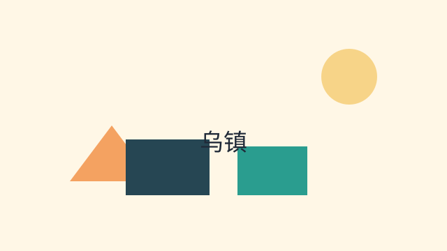
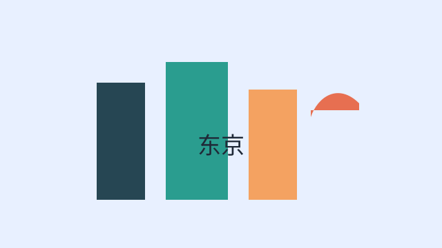

天门山国家森林公园
著名的高山玻璃栈道、天门洞和缆车体验，适合冒险与自然观光。
- 开放时间：08:00 - 18:00
- 门票信息：成人票 258 元起
- 交通方式：市区巴士 / 自驾 / 包车
- 游玩建议：提前预约缆车票，避开高峰时段。
周边推荐：美食街、茶馆和酒店度假村。
查看详情展示热门景点的详细信息，包含开放时间、门票、交通与游玩建议。
快速打开外部攻略页面，默认使用“云南旅游攻略”关键词查询。
著名的高山玻璃栈道、天门洞和缆车体验，适合冒险与自然观光。
周边推荐：美食街、茶馆和酒店度假村。
查看详情
江南水乡景区，游览古桥、手工艺店和传统茶馆。
周边推荐：手工茶室、水上民宿和本地小吃。
查看详情
东京地标观景塔，适合城市夜景摄影与购物美食体验。
周边推荐：芝公园、东京铁塔周边餐厅与购物区。
查看详情